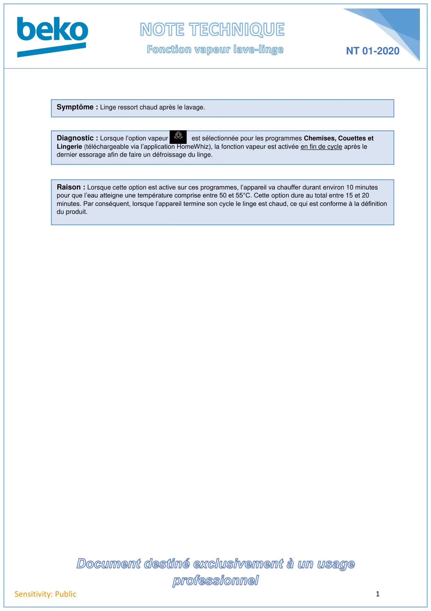

Fonction vapeur lave linge

1Sensitivity: PublicNT 01-2020Symptôme : Linge ressort chaud après le lavage.Diagnostic : Lorsque l’option vapeur est sélectionnée pour les programmes Chemises, Couettes etLingerie (téléchargeable via l’application HomeWhiz), la fonction vapeur est activée en fin de cycle après ledernier essorage afin de faire un défroissage du linge.Raison : Lorsque cette option est active sur ces programmes, l’appareil va chauffer durant environ 10 minutespour que l’eau atteigne une température comprise entre 50 et 55°C. Cette option dure au total entre 15 et 20minutes. Par conséquent, lorsque l’appareil termine son cycle le linge est chaud, ce qui est conforme à la définitiondu produit.
1 / 1